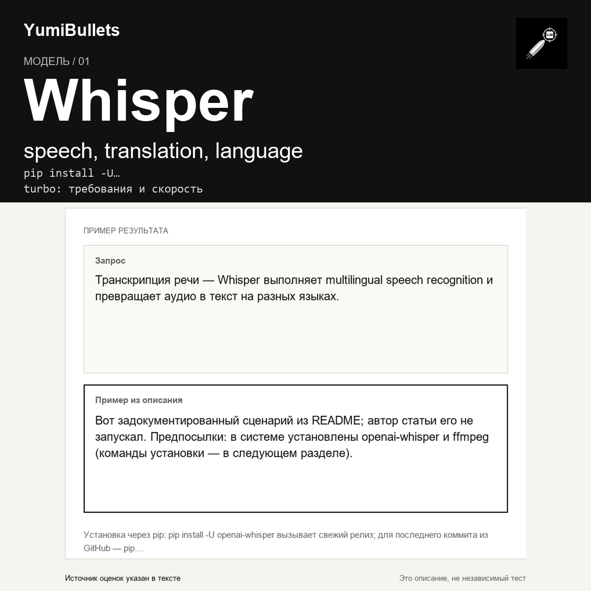

Whisper от OpenAI: транскрипция аудио одной командой
Вам нужно превратить запись разговора в текст и не хочется подключать платные API. Whisper — general-purpose speech recognition модель от OpenAI: подаёшь аудиофайл, получаешь…

Вам нужно превратить запись разговора в текст и не хочется подключать платные API. Whisper — general-purpose speech recognition модель от OpenAI: подаёшь аудиофайл, получаешь…